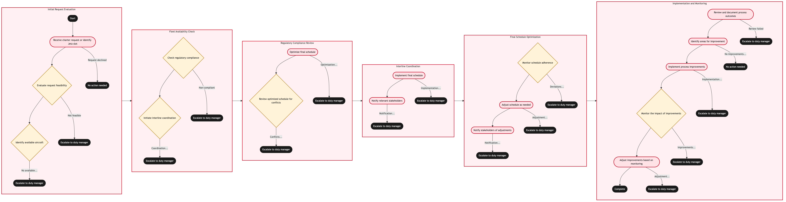

Updated 2026-08-20
Charter and Jetz Sub-Fleet Scheduling
Process flow
Click to zoom

Process steps
▼
Phase 1 — Initial Request Evaluation
3 steps
| Step | Activity | Role | System | Input | Output | KPI | Dec | Exc | Pain point |
|---|---|---|---|---|---|---|---|---|---|
| 1.1 | Receive charter request or identify Jetz slot | Network Planning Analyst | Lufthansa Systems NetLineB | Charter request form or internal notification of available Jetz slot | Request logged and prioritized in NetLine | Time to log request < 1 hour | N | Y | Delays in receiving charter requests can impact overall fleet utilization. |
| 1.2 | Evaluate request feasibility | Network Planning Analyst | Lufthansa Systems NetLine/PlanU | Logged charter request details | Feasibility report with constraints and recommendations | Feasibility evaluation completed within 2 hours | Y | N | Complex route planning can lead to extended evaluation times. |
| 1.3 | Identify available aircraft | Fleet Assignment Specialist | Lufthansa Systems NetLine/PlanU | Feasibility report | List of available aircraft matching request criteria | Aircraft identification completed within 1 hour | Y | N | Inadequate aircraft availability can lead to charter cancellations. |
▼
Phase 2 — Fleet Availability Check
2 steps
| Step | Activity | Role | System | Input | Output | KPI | Dec | Exc | Pain point |
|---|---|---|---|---|---|---|---|---|---|
| 2.1 | Check regulatory compliance | Regulatory Compliance Officer | Lufthansa Systems NetLine/PlanU | Selected aircraft and route details | Compliance report with any required approvals | Regulatory check completed within 2 hours | Y | N | Missing regulatory documents can delay charter operations. |
| 2.2 | Initiate interline coordination | Star Alliance Interline Coordinator | Star Alliance InterlineA | Compliance report and selected aircraft | Interline agreement status | Interline coordination completed within 3 hours | Y | N | Communication delays with Star Alliance partners can impact schedule timing. |
▼
Phase 3 — Regulatory Compliance Review
2 steps
| Step | Activity | Role | System | Input | Output | KPI | Dec | Exc | Pain point |
|---|---|---|---|---|---|---|---|---|---|
| 3.1 | Optimize final schedule | Network Planning Analyst | Lufthansa Systems NetLine/PlanU | Interline agreement status and compliance report | Optimized schedule with assigned aircraft, crew, and resources | Final schedule optimization completed within 4 hours | N | Y | Conflicting schedules can lead to resource allocation issues. |
| 3.2 | Review optimized schedule for conflicts | Network Planning Analyst | Lufthansa Systems NetLine/PlanU | Optimized schedule | Conflict report with resolutions | Conflict review completed within 2 hours | Y | N | Resource conflicts can lead to delays in flight operations. |
▼
Phase 4 — Interline Coordination
2 steps
| Step | Activity | Role | System | Input | Output | KPI | Dec | Exc | Pain point |
|---|---|---|---|---|---|---|---|---|---|
| 4.1 | Implement final schedule | Network Planning Analyst | Lufthansa Systems NetLineB | Conflict-free optimized schedule | Finalized schedule in NetLine | Schedule implementation completed within 1 hour | N | Y | System integration issues can delay schedule deployment. |
| 4.2 | Notify relevant stakeholders | Network Planning Analyst | Lufthansa Systems NetLineB | Finalized schedule | Notifications sent to crew, ground operations, and other departments | Stakeholder notifications completed within 1 hour | N | Y | Inaccurate or delayed notifications can lead to operational disruptions. |
▼
Phase 5 — Final Schedule Optimization
3 steps
| Step | Activity | Role | System | Input | Output | KPI | Dec | Exc | Pain point |
|---|---|---|---|---|---|---|---|---|---|
| 5.1 | Monitor schedule adherence | Network Planning Analyst | Lufthansa Systems NetLine/PlanU | Finalized schedule and real-time data | Adherence report with any deviations | Schedule adherence monitoring completed every 2 hours | Y | N | Real-time data delays can affect monitoring accuracy. |
| 5.2 | Adjust schedule as needed | Network Planning Analyst | Lufthansa Systems NetLine/PlanU | Adherence report and deviations | Adjusted schedule in NetLine | Schedule adjustments completed within 1 hour | N | Y | Complex scheduling changes can lead to further delays. |
| 5.3 | Notify stakeholders of adjustments | Network Planning Analyst | Lufthansa Systems NetLineB | Adjusted schedule | Notifications sent to relevant departments | Adjustment notifications completed within 1 hour | N | Y | Inconsistent communication can lead to confusion among operational teams. |
▼
Phase 6 — Implementation and Monitoring
5 steps
| Step | Activity | Role | System | Input | Output | KPI | Dec | Exc | Pain point |
|---|---|---|---|---|---|---|---|---|---|
| 6.1 | Review and document process outcomes | Network Planning Analyst | Lufthansa Systems NetLine/PlanU | Finalized schedule, adherence report, and adjustment logs | Process review document | Process review completed within 1 day | N | Y | Inadequate documentation can hinder future process improvements. |
| 6.2 | Identify areas for improvement | Network Planning Analyst | Lufthansa Systems NetLine/PlanU | Process review document | Improvement recommendations | Improvement identification completed within 1 day | N | Y | Lack of clear improvement areas can lead to inefficiencies. |
| 6.3 | Implement process improvements | Network Planning Analyst | Lufthansa Systems NetLine/PlanU | Improvement recommendations | Updated scheduling procedures and system configurations | Improvements implemented within 2 weeks | N | Y | Resistance to change can slow down implementation. |
| 6.4 | Monitor the impact of improvements | Network Planning Analyst | Lufthansa Systems NetLine/PlanU | Updated procedures and system configurations | Impact assessment report | Impact monitoring completed every 2 weeks | Y | N | Inaccurate impact assessments can lead to misinformed decisions. |
| 6.5 | Adjust improvements based on monitoring | Network Planning Analyst | Lufthansa Systems NetLine/PlanU | Impact assessment report | Adjusted scheduling procedures and system configurations | Adjustments completed within 1 week | N | Y | Continuous adjustments can lead to operational complexity. |
Swim lanes
Network Planning Analyst1.1 1.2 3.1 3.2 4.1 4.2 5.1 5.2 5.3 6.1 6.2 6.3 6.4 6.5
Fleet Assignment Specialist1.3
Regulatory Compliance Officer2.1
Star Alliance Interline Coordinator2.2
Systems touched
Lufthansa Systems NetLineBLufthansa Systems NetLine/PlanUStar Alliance InterlineA
Key performance indicators
- Time to log request < 1 hour
- Feasibility evaluation completed within 2 hours
- Aircraft identification completed within 1 hour
- Regulatory check completed within 2 hours
- Interline coordination completed within 3 hours
Risks and control points
- Delays in receiving charter requests impacting fleet utilization.
- Complex route planning leading to extended evaluation times.
- Inadequate aircraft availability causing charter cancellations.
- Missing regulatory documents delaying charter operations.
- Communication delays with Star Alliance partners impacting schedule timing.
Air Canada Process Wiki — process and systems reference compiled from public sources
for IT Application Management and User Support pre-sales discovery.
Built 2026-08-20. Every system carries an evidence tier: tier C is an industry pattern and tier U is an open
question, and neither should be asserted as fact about Air Canada without confirmation in discovery.
Not affiliated with or endorsed by Air Canada. Air Canada, Aeroplan and Altitude are trademarks of Air Canada.